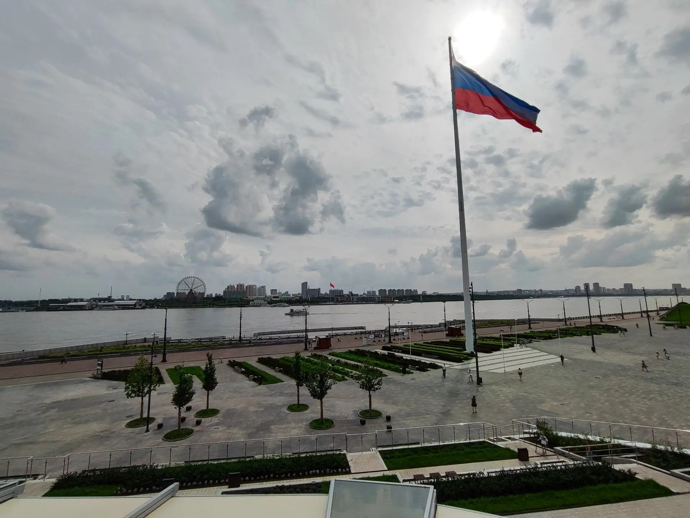
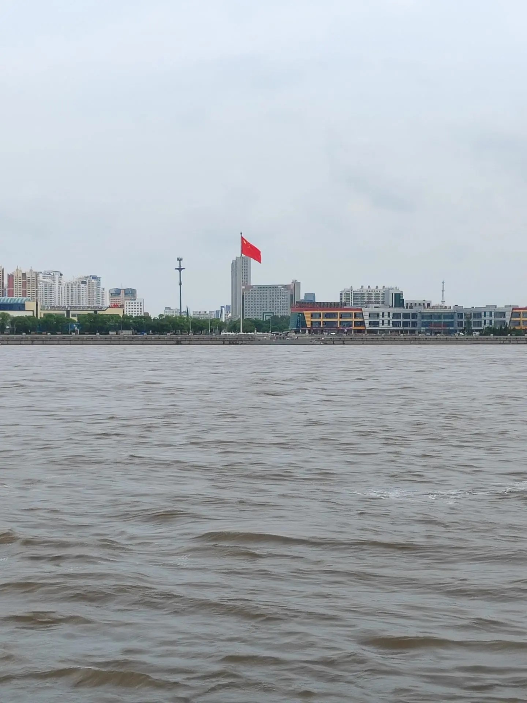

01
Цель проекта
Исследовать особенности диалога культур Амурской области и китайской провинции Хэйлунцзян на примере литературы и поэзии.
Амурская область и провинция Хэйлунцзян
Два берега одной реки, две культуры и многовековая история взаимодействия. Исследуем, как соседство народов отражается в истории, литературе и поэзии.
Исследовать проект
Благовещенск
ХэйхэПочему диалог культур важен для приграничных территорий?
Диалог культур — это непосредственные связи между культурами, а также результаты их взаимодействия и взаимного изменения.
Особенно интенсивно такой диалог проявляется в приграничных регионах, где географическая близость становится основой для исторических, экономических и культурных контактов.
Исследовать особенности диалога культур Амурской области и китайской провинции Хэйлунцзян на примере литературы и поэзии.
Соседство России и Китая создаёт условия для постоянного культурного обмена, взаимного познания и сотрудничества.
Литературные связи, поэтическое наследие и отражение культурных особенностей двух регионов в художественных произведениях.
От первых контактов и территориальных споров до современного сотрудничества Благовещенска и Хэйхэ.
В XVII веке интересы России и империи Цин столкнулись в Приамурье. Китайская сторона стремилась добиться ухода русских от Амура.
В 1676 году посольство Николая Спафария не смогло разрешить противоречия. В 1682 году было учреждено Албазинское воеводство под руководством Алексея Толбузина.
В 1685 и 1686 годах крепость Албазин подверглась осадам цинских войск. После заключения Нерчинского договора русские оставили крепость.
Договор закрепил передачу земель на правом берегу Аргуни Китаю, однако вопрос о границе по Амуру окончательно решён не был.
Важным этапом стали переговоры российского посольства во главе с Саввой Рагузинским Владиславичем.
Соглашения определили правила приграничной торговли и дипломатических отношений. Россия получила право отправлять торговые караваны в Пекин, а также вести беспошлинную торговлю на границе.
Эти договорённости стали правовой основой российско-китайских отношений на протяжении значительной части XVIII и первой половины XIX века.
В середине XIX века положение Китая осложнилось внутренними конфликтами и внешнеполитическими проблемами. Это создало предпосылки для пересмотра границ на Дальнем Востоке.
В 1847 году Николай Муравьёв был назначен генерал-губернатором Восточной Сибири. В 1849 году Геннадий Невельской достиг устья Амура, а в 1850 году был основан Николаевский пост.
В 1854–1856 годах состоялись военные экспедиции по Амуру. Они способствовали укреплению российского присутствия на левом берегу реки.
Договор закрепил за Россией территории по левому берегу Амура. Территория между Уссури и морем до окончательного определения границы находилась в совместном владении.
В том же году был заключён Тяньцзиньский договор, расширивший права России в отношениях с Китаем.
Договор определил границу по китайскому берегу Амура и Уссури. Реки оказались на российской стороне границы.
В китайской историографии эти соглашения рассматриваются как неравноправные договоры.
В 1964 году СССР согласился с принципом прохождения границы по главному фарватеру пограничных рек.
В 1987–1991 годах происходило переосмысление правовых оснований Пекинского договора 1860 года и пограничных отношений между государствами.
Эти процессы стали частью сложной истории территориальных и дипломатических отношений России и Китая в XX веке.
Сегодня Амурская область и китайская провинция Хэйлунцзян активно развивают экономические, туристические и культурные связи.
Благовещенск и Хэйхэ стали важными центрами приграничного взаимодействия. Реализуются совместные проекты, проводятся международные мероприятия и культурные фестивали.
История отношений России и Китая прошла через территориальные противоречия, дипломатические переговоры и развитие торговли. Сегодня особую роль в сближении двух стран играют приграничные регионы, где взаимодействие становится частью повседневной жизни людей.
Именно поэтому Благовещенск и Хэйхэ представляют особый интерес для изучения диалога культур.
История китайской литературы — это чередование традиции и эксперимента, элитарной письменной культуры и массового чтения. Каждый исторический период оставил собственный след в литературном наследии Китая.
ДРЕВНИЙ ПЕРИОД
Первые памятники китайской письменности связаны с гадательными надписями «цзягу вэнь». В эпоху Чжоу формируется конфуцианский канон, оказавший огромное влияние на культуру страны.
«Ши-цзин» — «Книга песен». Один из важнейших памятников древней китайской литературы. В сборник входит около 305 стихотворений: обрядовые гимны, придворная и народная поэзия.
Произведение задало модель, в которой поэзия выполняла одновременно эстетическую, этическую и политическую функции.
Другие памятники эпохи:
Для китайской традиции было характерно тесное переплетение философии, этики и литературы. Большое значение имели стилевое совершенство и соблюдение ритуальных норм.
ИМПЕРСКИЙ КЛАССИЧЕСКИЙ ПЕРИОД
В эпохи Тан и Сун поэзия стала важнейшей частью образованности. Стихи писали не только профессиональные литераторы, но и чиновники, представители знати и даже императоры.
Эпоха Тан (618–907).
Происходит расцвет жанра «ши», для которого характерны строгая организация строк, рифмовка и параллелизм.
Крупнейшие поэты:
Сборник «Триста танских стихотворений» помог закрепить поэтический канон в массовом сознании.
Эпоха Сун (960–1279).
Развивается жанр «цы», предоставляющий поэту большую свободу интонации и выражения эмоций. Поэзия становится более рефлексивной и интеллектуальной.
Одним из наиболее известных представителей эпохи был Су Ши — воплощение идеала универсального литератора.
СРЕДНЕВЕКОВЫЙ ПЕРИОД
В эпоху Юань происходит заметное развитие музыкального театра. Литература становится доступнее широкой аудитории, а сценические произведения затрагивают общественные проблемы и социальное недовольство.
Ограничение доступа китайской элиты к государственным должностям ослабило традицию экзаменационной поэзии.
На первый план выходит драма «цзацзюй», связанная с разговорным языком и жанром «цюй».
Особенности театра:
Театр становится каналом выражения общественного недовольства, которое не всегда могло найти отражение в официальной литературе.
ПОЗДНИЙ ИМПЕРСКИЙ ПЕРИОД
В эпохи Мин и Цин завершается формирование традиционного прозаического канона. Особое значение приобретает роман на разговорном языке.
Четыре великих романа Китая:
Эти произведения представляют разные направления традиционной прозы: историческую хронику, социальный протест, буддийско-даосскую аллегорию и психологический роман.
Постепенно литературный канон расширяется: наряду с классическими философскими и поэтическими текстами признание получают крупные прозаические произведения.
Конец XIX века.
Подготовку к литературным преобразованиям осуществляют реформаторы языка: Хуан Цзуньсянь, Кан Ювэй и Лян Цичао.
СОВРЕМЕННЫЙ ПЕРИОД
XX век приносит масштабные изменения: обновляется литературный язык, появляются новые художественные направления, а китайская литература выходит на мировую арену.
Движение 4 мая 1919 года.
Движение за новую культуру ускорило переход от классического письменного языка «вэньянь» к разговорному «байхуа». Теоретиками преобразований стали Ху Ши и Чэнь Дусю.
Лу Синь считается одним из основателей современной китайской прозы. Среди его известных произведений:
Для его творчества характерны внутренний монолог, психологизм и аллегория.
После 1949 года.
Литература становится инструментом идеологического воспитания. Развиваются социалистический реализм и «революционный романтизм». В годы Культурной революции (1966–1976) писатели подвергались репрессиям.
С конца 1970-х годов.
Возникают «литература шрамов», «литература поиска корней», а также авангардные направления.
Известные современные авторы:
Сегодня активно развиваются жанровая проза, интернет-романы и маньхуа.
Китайская литература всегда была тесно связана с образованием, государством и философией. Конфуцианство, даосизм и буддизм влияли на её тематику и представления о назначении литературного творчества.
Переход к байхуа стал важнейшим культурным преобразованием: письменная культура стала доступнее широким слоям общества. При этом новые направления не уничтожили традицию, а переосмыслили её.
Как русская и китайская литература взаимодействовали на протяжении истории?
М. М. Бахтин рассматривал культуру как явление, существующее на границе с другой культурой. Познание другого помогает человеку лучше понять собственную культуру.
Произведения Пушкина, Лермонтова, Толстого, Чехова и других русских писателей оказали влияние на развитие китайской литературы.
Контакты двух народов отразились в русском языке, литературе и художественных образах, связанных с культурой Востока.
Приграничное положение региона способствует появлению произведений, в которых соединяются русские литературные традиции и восточные культурные мотивы.
Как один и тот же город может восприниматься по-разному представителями разных культур? Сравним стихотворения Николая Левченко «Осень в Благовещенске» и Ли Янлен «Осеннее утро в Благовещенске».
Тема произведения — осенняя прогулка по Благовещенску как путь к исторической памяти города. Автор размышляет о том, что культурное наследие нуждается в бережном отношении и преемственности.
Основная мысль заключается в том, что по-настоящему живёт лишь то, что человек оставляет после себя и передаёт другим поколениям.
«Слепые приведенья редких пар»
Метафора и эпитетПрогуливающиеся пары названы «слепыми приведеньями». Образ передаёт размытость осеннего вечера, а также намекает на безликость людей, которые могут стать частью забытого прошлого.
«Поскольку память у народа коротка»
Олицетворение и иронияПамять наделяется человеческим качеством — она становится «короткой». Ирония автора подчёркивает неблагодарность современников по отношению к людям, оставившим культурное наследие.
«Молилась и страдала, и ждала»
Олицетворение и синекдохаБольница представлена как живое существо, способное переживать и ждать. Окна здания становятся деталью, через которую изображается весь городской образ.
«Сквозь кружево ветвей»
Метафора и эпитетОбраз кружева передаёт ажурность ветвей и хрупкость осенней природы.
«От старины, что вокруг нас сомкнулась»
ОлицетворениеПрошлое словно окружает героев. История города становится неотъемлемой частью настоящего.
«На фоне запалённого заката»
ЭпитетВыразительное определение усиливает эмоциональность пейзажа. Силуэт солдата на фоне заката связывает городской пейзаж с памятью о военном прошлом.
«Окна Чуринского дома / На нас глядели родственно-знакомо»
Олицетворение и эпитетОкна здания словно узнают прохожих. Определение «родственно-знакомо» создаёт ощущение близости человека и города.
«Живёт лишь то, что оставляем мы»
Метафора и параллелизмЭта мысль становится смысловым центром произведения. Наследие продолжает жить благодаря людям, которые сохраняют его и передают следующим поколениям.
«Наш Город, книге начатой под стать»
МетафораГород сравнивается с книгой, которую человек читает на протяжении всей жизни. Прогулка превращается в знакомство с историей и памятью Благовещенска.
Тема произведения — утренняя сцена, в которой дворник сжигает опавшие листья. Обычное событие становится поводом для размышления о возрождении жизни.
Основная мысль заключается в том, что даже то, что кажется утраченным, может стать основой для нового роста. Вера простого человека в обновление передаётся лирическому герою.
«Листья, опавшие смёл старичок»
ИнверсияНеобычный порядок слов выделяет фигуру скромного дворника, с которого начинается всё повествование.
«Улицей Зейскою плавно потёк»
ОлицетворениеДымок изображён как живой поток, который движется по улице. Благодаря этому обычная бытовая сцена приобретает плавность и спокойствие.
«Пусть же с листвою сгорят огорченья»
МетафораЛистья символически связываются с человеческими переживаниями. Их сжигание становится образом освобождения от грусти и забот.
«Станет зола для земли удобреньем»
МетафораЗола становится символом того, что даже утрата может принести пользу будущему и стать основой нового роста.
«Зелень живую грядущего года»
Эпитет и олицетворениеОбраз будущей зелени передаёт надежду на обновление природы и продолжение жизни.
«Дворника вера и мной овладела»
МетафораУбеждённость простого человека в приходе весны передаётся лирическому герою. Вера становится общим чувством.
«Жизнь, возрождённая в городе вашем»
Эпитет и обращениеСлово «вашем» подчёркивает позицию автора: он обращается к жителям Благовещенска как гость, искренне желающий городу добра.
Диалог культур проявляется уже в самом факте существования этих произведений: китайский поэт пишет на русском языке о российском городе, а его текст естественно вписывается в традицию русской пейзажной лирики.
Осенний образ раскрывает два разных философских взгляда. В стихотворении Левченко осень связана с памятью, утратой и необходимостью сохранить прошлое. В произведении Ли Янлен сжигание листвы становится частью естественного круговорота: то, что сгорело, превращается в основу будущего роста.
Один поэт напоминает о важности сохранения памяти, другой — о возможности обновления. Вместе они показывают, что культурный диалог не стирает различия, а помогает увидеть в них взаимное дополнение.
В произведениях Станислава Повного и Ма Чао Благовещенск предстает в образе человека. Однако каждый автор наделяет город собственным характером, раскрывая разные стороны его жизни.
Сопоставление произведений позволяет увидеть, насколько по-разному можно воспринимать один и тот же город. В стихотворении Станислава Повного Благовещенск ассоциируется с трудом, стойкостью и преданностью родным местам. Ма Чао обращается к образу старика, раскрывая город через мудрость, спокойствие и размышления о времени.
Несмотря на различия, оба автора изображают Благовещенск не просто географическим пространством, а живым участником человеческой истории. Именно это становится основой литературного диалога между двумя произведениями.
Насколько по-разному можно увидеть один город? Предлагаем сравнить стихотворения Станислава Повного и Ма Чао и поделиться своим мнением.
Нам важно ваше мнение! Поделитесь впечатлениями о проекте «Диалог культур».
Расскажите, что вам понравилось и что нового вы узнали благодаря нашему проекту.
Оставить отзывНикогда раньше не задумывалась, как китайские поэты видят наш Благовещенск. Сравнение стихотворений Николая Левченко и Ли Янлен просто открыло глаза на то, что один и тот же осенний город у одного — грусть и память, а у другого — светлая надежда на весну. Очень красиво сделано!